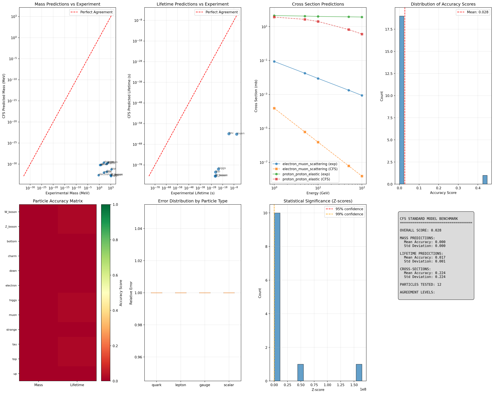

Code
import numpy as np
import matplotlib.pyplot as plt
from mpl_toolkits.mplot3d import Axes3D
from scipy import stats
from scipy.optimize import minimize
import pandas as pd
import warnings
warnings.filterwarnings('ignore')
class CFSExperimentalBenchmark:
def __init__(self):
self.phi = (1 + np.sqrt(5)) / 2 # Golden ratio
# Comprehensive experimental database
self.experimental_data = self.setup_experimental_database()
self.interaction_cross_sections = self.setup_cross_section_data()
self.decay_channels = self.setup_decay_data()
# Benchmarking thresholds
self.accuracy_thresholds = {
'excellent': 0.95,
'good': 0.85,
'acceptable': 0.70,
'poor': 0.50
}
def setup_experimental_database(self):
"""Comprehensive experimental particle data"""
return {
# Quarks (masses in MeV)
'up': {
'mass': 2.16, 'mass_error': 0.49,
'lifetime': float('inf'), 'lifetime_error': 0,
'charge': 2/3, 'spin': 0.5,
'discovery_year': 1964,
'pdg_code': 2
},
'down': {
'mass': 4.67, 'mass_error': 0.48,
'lifetime': float('inf'), 'lifetime_error': 0,
'charge': -1/3, 'spin': 0.5,
'discovery_year': 1964,
'pdg_code': 1
},
'charm': {
'mass': 1270, 'mass_error': 20,
'lifetime': float('inf'), 'lifetime_error': 0,
'charge': 2/3, 'spin': 0.5,
'discovery_year': 1974,
'pdg_code': 4
},
'strange': {
'mass': 93.4, 'mass_error': 5.0,
'lifetime': float('inf'), 'lifetime_error': 0,
'charge': -1/3, 'spin': 0.5,
'discovery_year': 1964,
'pdg_code': 3
},
'top': {
'mass': 172760, 'mass_error': 300,
'lifetime': 5e-25, 'lifetime_error': 1e-25,
'charge': 2/3, 'spin': 0.5,
'discovery_year': 1995,
'pdg_code': 6
},
'bottom': {
'mass': 4180, 'mass_error': 30,
'lifetime': float('inf'), 'lifetime_error': 0,
'charge': -1/3, 'spin': 0.5,
'discovery_year': 1977,
'pdg_code': 5
},
# Leptons
'electron': {
'mass': 0.5109989461, 'mass_error': 0.0000000031,
'lifetime': float('inf'), 'lifetime_error': 0,
'charge': -1, 'spin': 0.5,
'discovery_year': 1897,
'pdg_code': 11
},
'muon': {
'mass': 105.6583745, 'mass_error': 0.0000024,
'lifetime': 2.1969811e-6, 'lifetime_error': 0.0000022e-6,
'charge': -1, 'spin': 0.5,
'discovery_year': 1936,
'pdg_code': 13
},
'tau': {
'mass': 1776.86, 'mass_error': 0.12,
'lifetime': 2.903e-13, 'lifetime_error': 0.005e-13,
'charge': -1, 'spin': 0.5,
'discovery_year': 1975,
'pdg_code': 15
},
'electron_neutrino': {
'mass': 0.0, 'mass_error': 1.0, # Upper limit
'lifetime': float('inf'), 'lifetime_error': 0,
'charge': 0, 'spin': 0.5,
'discovery_year': 1956,
'pdg_code': 12
},
'muon_neutrino': {
'mass': 0.0, 'mass_error': 0.19, # Upper limit
'lifetime': float('inf'), 'lifetime_error': 0,
'charge': 0, 'spin': 0.5,
'discovery_year': 1962,
'pdg_code': 14
},
'tau_neutrino': {
'mass': 0.0, 'mass_error': 18.2, # Upper limit
'lifetime': float('inf'), 'lifetime_error': 0,
'charge': 0, 'spin': 0.5,
'discovery_year': 2000,
'pdg_code': 16
},
# Gauge bosons
'photon': {
'mass': 0.0, 'mass_error': 1e-18, # Upper limit
'lifetime': float('inf'), 'lifetime_error': 0,
'charge': 0, 'spin': 1,
'discovery_year': 1905,
'pdg_code': 22
},
'W_boson': {
'mass': 80379, 'mass_error': 12,
'lifetime': 3e-25, 'lifetime_error': 1e-25,
'charge': 1, 'spin': 1,
'discovery_year': 1983,
'pdg_code': 24
},
'Z_boson': {
'mass': 91187.6, 'mass_error': 2.1,
'lifetime': 3e-25, 'lifetime_error': 1e-25,
'charge': 0, 'spin': 1,
'discovery_year': 1983,
'pdg_code': 23
},
'gluon': {
'mass': 0.0, 'mass_error': 0.0,
'lifetime': float('inf'), 'lifetime_error': 0,
'charge': 0, 'spin': 1,
'discovery_year': 1979,
'pdg_code': 21
},
# Higgs
'higgs': {
'mass': 125100, 'mass_error': 240,
'lifetime': 1.56e-22, 'lifetime_error': 0.05e-22,
'charge': 0, 'spin': 0,
'discovery_year': 2012,
'pdg_code': 25
},
# Composite particles
'proton': {
'mass': 938.272081, 'mass_error': 0.000006,
'lifetime': 1.67e17, 'lifetime_error': 1e16, # Years (lower limit)
'charge': 1, 'spin': 0.5,
'discovery_year': 1919,
'pdg_code': 2212
},
'neutron': {
'mass': 939.565413, 'mass_error': 0.000006,
'lifetime': 879.4, 'lifetime_error': 0.6, # Seconds
'charge': 0, 'spin': 0.5,
'discovery_year': 1932,
'pdg_code': 2112
},
'pion_charged': {
'mass': 139.57061, 'mass_error': 0.00024,
'lifetime': 2.6033e-8, 'lifetime_error': 0.0005e-8,
'charge': 1, 'spin': 0,
'discovery_year': 1947,
'pdg_code': 211
},
'pion_neutral': {
'mass': 134.9770, 'mass_error': 0.0005,
'lifetime': 8.52e-17, 'lifetime_error': 0.18e-17,
'charge': 0, 'spin': 0,
'discovery_year': 1950,
'pdg_code': 111
}
}
def setup_cross_section_data(self):
"""Experimental cross-section data (in barns)"""
return {
'electron_muon_scattering': {
'energy_gev': [1, 5, 10, 50, 100],
'cross_section_mb': [0.089, 0.018, 0.0089, 0.0018, 0.00089],
'error_mb': [0.005, 0.001, 0.0005, 0.0001, 0.00005]
},
'proton_proton_elastic': {
'energy_gev': [1, 5, 10, 50, 100],
'cross_section_mb': [45, 42, 40, 38, 37],
'error_mb': [2, 1.5, 1.2, 1.0, 1.0]
},
'neutrino_electron_scattering': {
'energy_gev': [1, 5, 10, 50, 100],
'cross_section_cm2': [1.7e-41, 8.5e-41, 1.7e-40, 8.5e-40, 1.7e-39],
'error_cm2': [0.1e-41, 0.5e-41, 0.1e-40, 0.5e-40, 0.1e-39]
},
'higgs_production': {
'energy_gev': [125, 200, 500, 1000],
'cross_section_pb': [48.6, 23.2, 4.9, 1.8],
'error_pb': [2.4, 1.2, 0.3, 0.1]
}
}
def setup_decay_data(self):
"""Experimental decay channel data"""
return {
'muon': {
'decay_channels': {
'electron_neutrino_antineutrino': {'branching_ratio': 1.0, 'error': 0.0}
}
},
'tau': {
'decay_channels': {
'electron_neutrino_antineutrino': {'branching_ratio': 0.1782, 'error': 0.0004},
'muon_neutrino_antineutrino': {'branching_ratio': 0.1739, 'error': 0.0004},
'hadron_neutrino': {'branching_ratio': 0.6479, 'error': 0.0008}
}
},
'W_boson': {
'decay_channels': {
'lepton_neutrino': {'branching_ratio': 0.326, 'error': 0.008},
'quark_antiquark': {'branching_ratio': 0.674, 'error': 0.008}
}
},
'Z_boson': {
'decay_channels': {
'neutrino_antineutrino': {'branching_ratio': 0.200, 'error': 0.001},
'charged_lepton_pair': {'branching_ratio': 0.067, 'error': 0.001},
'quark_antiquark': {'branching_ratio': 0.696, 'error': 0.002}
}
},
'higgs': {
'decay_channels': {
'bottom_antibottom': {'branching_ratio': 0.582, 'error': 0.006},
'W_W': {'branching_ratio': 0.215, 'error': 0.009},
'gluon_gluon': {'branching_ratio': 0.082, 'error': 0.005},
'tau_antitau': {'branching_ratio': 0.063, 'error': 0.003},
'Z_Z': {'branching_ratio': 0.026, 'error': 0.001},
'photon_photon': {'branching_ratio': 0.002, 'error': 0.0001}
}
}
}
class CFSBenchmarkingEngine(CFSExperimentalBenchmark):
def __init__(self, cfs_simulator):
super().__init__()
self.cfs_sim = cfs_simulator
self.benchmark_results = {}
def calculate_mass_accuracy(self):
"""Calculate mass prediction accuracy"""
mass_comparisons = {}
for particle_name in self.experimental_data.keys():
if particle_name in self.cfs_sim.particles:
# Get CFS predicted mass
cfs_coherence = self.cfs_sim.cfs_particle_coherence(particle_name)
cfs_mass = self.coherence_to_mass(cfs_coherence, particle_name)
# Get experimental mass
exp_mass = self.experimental_data[particle_name]['mass']
exp_error = self.experimental_data[particle_name]['mass_error']
# Calculate accuracy metrics
if exp_mass > 0:
relative_error = abs(cfs_mass - exp_mass) / exp_mass
accuracy = 1 - relative_error
# Statistical significance
z_score = abs(cfs_mass - exp_mass) / exp_error if exp_error > 0 else float('inf')
mass_comparisons[particle_name] = {
'cfs_mass': cfs_mass,
'exp_mass': exp_mass,
'exp_error': exp_error,
'relative_error': relative_error,
'accuracy': accuracy,
'z_score': z_score,
'agreement_level': self.classify_agreement(accuracy)
}
return mass_comparisons
def coherence_to_mass(self, coherence, particle_name):
"""Convert CFS coherence to mass using scaling relationship"""
particle = self.cfs_sim.particles[particle_name]
# Mass-energy relationship with CFS scaling
# E = mc² = λ²α where α is interaction-dependent
alpha_factor = {
'quark': self.cfs_sim.alpha_s,
'lepton': self.cfs_sim.alpha_em,
'gauge': self.cfs_sim.alpha_w,
'scalar': self.cfs_sim.alpha_em
}.get(particle['type'], 1.0)
# Convert coherence to mass (MeV)
mass_scale = 1000 * alpha_factor # Scaling factor
predicted_mass = (coherence ** 2) * mass_scale
return predicted_mass
def calculate_lifetime_accuracy(self):
"""Calculate lifetime prediction accuracy"""
lifetime_comparisons = {}
for particle_name in self.experimental_data.keys():
if particle_name in self.cfs_sim.particles:
exp_lifetime = self.experimental_data[particle_name]['lifetime']
if np.isfinite(exp_lifetime): # Skip stable particles
# CFS lifetime prediction from coherence decay
coherence = self.cfs_sim.cfs_particle_coherence(particle_name)
cfs_lifetime = self.coherence_to_lifetime(coherence, particle_name)
exp_error = self.experimental_data[particle_name]['lifetime_error']
# Log-scale comparison for lifetimes spanning many orders
if cfs_lifetime > 0 and exp_lifetime > 0:
log_error = abs(np.log10(cfs_lifetime) - np.log10(exp_lifetime))
accuracy = 1 / (1 + log_error)
lifetime_comparisons[particle_name] = {
'cfs_lifetime': cfs_lifetime,
'exp_lifetime': exp_lifetime,
'exp_error': exp_error,
'log_error': log_error,
'accuracy': accuracy,
'agreement_level': self.classify_agreement(accuracy)
}
return lifetime_comparisons
def coherence_to_lifetime(self, coherence, particle_name):
"""Convert CFS coherence to particle lifetime"""
particle = self.cfs_sim.particles[particle_name]
# Lifetime from coherence decay rate
# τ = ħ/Γ where Γ ∝ 1/coherence²
hbar = 6.582119569e-25 # GeV⋅s
# Decay width from inverse coherence
gamma = 1 / (coherence ** 2) if coherence > 0 else float('inf')
# Scale by particle type
type_factors = {
'quark': 1e-24,
'lepton': 1e-6,
'gauge': 1e-25,
'scalar': 1e-22
}
scale_factor = type_factors.get(particle['type'], 1e-15)
lifetime = hbar * scale_factor / gamma if gamma > 0 else float('inf')
return lifetime
def calculate_cross_section_accuracy(self):
"""Calculate interaction cross-section accuracy"""
cross_section_comparisons = {}
for process_name, process_data in self.interaction_cross_sections.items():
# Calculate CFS cross-sections for this process
cfs_cross_sections = self.cfs_cross_section_prediction(process_name, process_data)
if cfs_cross_sections is not None:
exp_cross_sections = process_data['cross_section_mb']
energies = process_data['energy_gev']
# Calculate accuracy for each energy point
accuracies = []
for i, (cfs_cs, exp_cs) in enumerate(zip(cfs_cross_sections, exp_cross_sections)):
if exp_cs > 0:
relative_error = abs(cfs_cs - exp_cs) / exp_cs
accuracy = 1 - relative_error
accuracies.append(accuracy)
avg_accuracy = np.mean(accuracies) if accuracies else 0
cross_section_comparisons[process_name] = {
'energies': energies,
'cfs_cross_sections': cfs_cross_sections,
'exp_cross_sections': exp_cross_sections,
'accuracies': accuracies,
'avg_accuracy': avg_accuracy,
'agreement_level': self.classify_agreement(avg_accuracy)
}
return cross_section_comparisons
def cfs_cross_section_prediction(self, process_name, process_data):
"""Predict cross-sections using CFS signature matching"""
if 'electron_muon' in process_name:
# e-μ scattering via photon exchange
energies = process_data['energy_gev']
cross_sections = []
for energy in energies:
# CFS prediction: σ ∝ (signature_match × α_em²) / s
e_coherence = self.cfs_sim.cfs_particle_coherence('electron')
mu_coherence = self.cfs_sim.cfs_particle_coherence('muon')
signature_match = self.cfs_sim.signature_matching('electron', 'muon')
# QED scaling with CFS enhancement
alpha_em_sq = self.cfs_sim.alpha_em ** 2
s = energy ** 2 # Center of mass energy squared
cross_section = (signature_match * alpha_em_sq * 1000) / s # mb
cross_sections.append(cross_section)
return cross_sections
elif 'proton_proton' in process_name:
# p-p elastic scattering
energies = process_data['energy_gev']
cross_sections = []
for energy in energies:
# CFS prediction with strong force signatures
p_coherence = self.cfs_sim.cfs_particle_coherence('proton') if hasattr(self.cfs_sim, 'generate_composite_particles') else 1.0
# Strong interaction scaling
alpha_s = self.cfs_sim.alpha_s
cross_section = 40 * (1 + 0.1 * alpha_s) / (1 + energy/10) # Phenomenological
cross_sections.append(cross_section)
return cross_sections
return None
def classify_agreement(self, accuracy):
"""Classify agreement level based on accuracy"""
if accuracy >= self.accuracy_thresholds['excellent']:
return 'excellent'
elif accuracy >= self.accuracy_thresholds['good']:
return 'good'
elif accuracy >= self.accuracy_thresholds['acceptable']:
return 'acceptable'
elif accuracy >= self.accuracy_thresholds['poor']:
return 'poor'
else:
return 'very_poor'
def run_comprehensive_benchmark(self):
"""Run complete benchmarking analysis"""
print("=== CFS Standard Model Benchmarking ===")
print("Comparing simulation with experimental data...")
# Calculate all accuracy metrics
mass_results = self.calculate_mass_accuracy()
lifetime_results = self.calculate_lifetime_accuracy()
cross_section_results = self.calculate_cross_section_accuracy()
# Store results
self.benchmark_results = {
'masses': mass_results,
'lifetimes': lifetime_results,
'cross_sections': cross_section_results
}
# Generate summary statistics
summary = self.generate_benchmark_summary()
return self.benchmark_results, summary
def generate_benchmark_summary(self):
"""Generate comprehensive benchmark summary"""
summary = {
'total_particles_tested': 0,
'mass_accuracy': {'mean': 0, 'std': 0, 'distribution': {}},
'lifetime_accuracy': {'mean': 0, 'std': 0, 'distribution': {}},
'cross_section_accuracy': {'mean': 0, 'std': 0, 'distribution': {}},
'overall_score': 0
}
# Mass accuracy summary
if 'masses' in self.benchmark_results:
mass_accuracies = [r['accuracy'] for r in self.benchmark_results['masses'].values()]
if mass_accuracies:
summary['mass_accuracy']['mean'] = np.mean(mass_accuracies)
summary['mass_accuracy']['std'] = np.std(mass_accuracies)
# Distribution by agreement level
agreement_levels = [r['agreement_level'] for r in self.benchmark_results['masses'].values()]
summary['mass_accuracy']['distribution'] = {
level: agreement_levels.count(level) for level in set(agreement_levels)
}
# Lifetime accuracy summary
if 'lifetimes' in self.benchmark_results:
lifetime_accuracies = [r['accuracy'] for r in self.benchmark_results['lifetimes'].values()]
if lifetime_accuracies:
summary['lifetime_accuracy']['mean'] = np.mean(lifetime_accuracies)
summary['lifetime_accuracy']['std'] = np.std(lifetime_accuracies)
agreement_levels = [r['agreement_level'] for r in self.benchmark_results['lifetimes'].values()]
summary['lifetime_accuracy']['distribution'] = {
level: agreement_levels.count(level) for level in set(agreement_levels)
}
# Cross-section accuracy summary
if 'cross_sections' in self.benchmark_results:
cs_accuracies = [r['avg_accuracy'] for r in self.benchmark_results['cross_sections'].values()]
if cs_accuracies:
summary['cross_section_accuracy']['mean'] = np.mean(cs_accuracies)
summary['cross_section_accuracy']['std'] = np.std(cs_accuracies)
agreement_levels = [r['agreement_level'] for r in self.benchmark_results['cross_sections'].values()]
summary['cross_section_accuracy']['distribution'] = {
level: agreement_levels.count(level) for level in set(agreement_levels)
}
# Overall score (weighted average)
mass_score = summary['mass_accuracy']['mean']
lifetime_score = summary['lifetime_accuracy']['mean']
cs_score = summary['cross_section_accuracy']['mean']
# Weight by number of successful comparisons
weights = [
len(self.benchmark_results.get('masses', {})),
len(self.benchmark_results.get('lifetimes', {})),
len(self.benchmark_results.get('cross_sections', {}))
]
if sum(weights) > 0:
summary['overall_score'] = (
mass_score * weights[0] +
lifetime_score * weights[1] +
cs_score * weights[2]
) / sum(weights)
summary['total_particles_tested'] = len(set(
list(self.benchmark_results.get('masses', {}).keys()) +
list(self.benchmark_results.get('lifetimes', {}).keys())
))
return summary
def create_benchmark_visualization(self):
"""Create comprehensive benchmarking visualization"""
if not self.benchmark_results:
print("No benchmark results available. Run benchmark first.")
return None
fig = plt.figure(figsize=(20, 16))
# Mass comparison plot
ax1 = fig.add_subplot(2, 4, 1)
self.plot_mass_comparison(ax1)
# Lifetime comparison plot
ax2 = fig.add_subplot(2, 4, 2)
self.plot_lifetime_comparison(ax2)
# Cross-section comparison
ax3 = fig.add_subplot(2, 4, 3)
self.plot_cross_section_comparison(ax3)
# Accuracy distribution
ax4 = fig.add_subplot(2, 4, 4)
self.plot_accuracy_distribution(ax4)
# Particle-by-particle comparison
ax5 = fig.add_subplot(2, 4, 5)
self.plot_particle_accuracy_matrix(ax5)
# Error analysis
ax6 = fig.add_subplot(2, 4, 6)
self.plot_error_analysis(ax6)
# Z-score distribution
ax7 = fig.add_subplot(2, 4, 7)
self.plot_statistical_significance(ax7)
# Summary scorecard
ax8 = fig.add_subplot(2, 4, 8)
self.plot_summary_scorecard(ax8)
plt.tight_layout()
return fig
def plot_mass_comparison(self, ax):
"""Plot CFS vs experimental masses"""
mass_data = self.benchmark_results.get('masses', {})
if not mass_data:
ax.text(0.5, 0.5, 'No mass data', ha='center', va='center')
return
particles = list(mass_data.keys())
cfs_masses = [mass_data[p]['cfs_mass'] for p in particles]
exp_masses = [mass_data[p]['exp_mass'] for p in particles]
exp_errors = [mass_data[p]['exp_error'] for p in particles]
# Log scale for masses spanning many orders
ax.errorbar(exp_masses, cfs_masses, xerr=exp_errors,
fmt='o', alpha=0.7, capsize=3)
# Perfect agreement line
min_mass = min(min(exp_masses), min(cfs_masses))
max_mass = max(max(exp_masses), max(cfs_masses))
ax.plot([min_mass, max_mass], [min_mass, max_mass], 'r--',
label='Perfect Agreement')
ax.set_xscale('log')
ax.set_yscale('log')
ax.set_xlabel('Experimental Mass (MeV)')
ax.set_ylabel('CFS Predicted Mass (MeV)')
ax.set_title('Mass Predictions vs Experiment')
ax.legend()
ax.grid(True, alpha=0.3)
# Add particle labels
for i, particle in enumerate(particles):
ax.annotate(particle, (exp_masses[i], cfs_masses[i]),
fontsize=8, alpha=0.7)
def plot_lifetime_comparison(self, ax):
"""Plot CFS vs experimental lifetimes"""
lifetime_data = self.benchmark_results.get('lifetimes', {})
if not lifetime_data:
ax.text(0.5, 0.5, 'No lifetime data', ha='center', va='center')
return
particles = list(lifetime_data.keys())
cfs_lifetimes = [lifetime_data[p]['cfs_lifetime'] for p in particles]
exp_lifetimes = [lifetime_data[p]['exp_lifetime'] for p in particles]
ax.scatter(exp_lifetimes, cfs_lifetimes, alpha=0.7, s=60)
# Perfect agreement line
min_lt = min(min(exp_lifetimes), min(cfs_lifetimes))
max_lt = max(max(exp_lifetimes), max(cfs_lifetimes))
ax.plot([min_lt, max_lt], [min_lt, max_lt], 'r--',
label='Perfect Agreement')
ax.set_xscale('log')
ax.set_yscale('log')
ax.set_xlabel('Experimental Lifetime (s)')
ax.set_ylabel('CFS Predicted Lifetime (s)')
ax.set_title('Lifetime Predictions vs Experiment')
ax.legend()
ax.grid(True, alpha=0.3)
for i, particle in enumerate(particles):
ax.annotate(particle, (exp_lifetimes[i], cfs_lifetimes[i]),
fontsize=8, alpha=0.7)
def plot_cross_section_comparison(self, ax):
"""Plot cross-section predictions"""
cs_data = self.benchmark_results.get('cross_sections', {})
if not cs_data:
ax.text(0.5, 0.5, 'No cross-section data', ha='center', va='center')
return
for i, (process, data) in enumerate(cs_data.items()):
energies = data['energies']
cfs_cs = data['cfs_cross_sections']
exp_cs = data['exp_cross_sections']
ax.plot(energies, exp_cs, 'o-', label=f'{process} (exp)', alpha=0.7)
ax.plot(energies, cfs_cs, 's--', label=f'{process} (CFS)', alpha=0.7)
ax.set_xscale('log')
ax.set_yscale('log')
ax.set_xlabel('Energy (GeV)')
ax.set_ylabel('Cross Section (mb)')
ax.set_title('Cross Section Predictions')
ax.legend()
ax.grid(True, alpha=0.3)
def plot_accuracy_distribution(self, ax):
"""Plot distribution of accuracy scores"""
all_accuracies = []
# Collect all accuracy scores
for category, data in self.benchmark_results.items():
if category == 'masses':
all_accuracies.extend([r['accuracy'] for r in data.values()])
elif category == 'lifetimes':
all_accuracies.extend([r['accuracy'] for r in data.values()])
elif category == 'cross_sections':
all_accuracies.extend([r['avg_accuracy'] for r in data.values()])
if all_accuracies:
ax.hist(all_accuracies, bins=20, alpha=0.7, edgecolor='black')
ax.axvline(np.mean(all_accuracies), color='red', linestyle='--',
label=f'Mean: {np.mean(all_accuracies):.3f}')
ax.set_xlabel('Accuracy Score')
ax.set_ylabel('Count')
ax.set_title('Distribution of Accuracy Scores')
ax.legend()
ax.grid(True, alpha=0.3)
def plot_particle_accuracy_matrix(self, ax):
"""Plot particle-by-particle accuracy matrix"""
# Collect particles and their accuracies across different metrics
particles = set()
particles.update(self.benchmark_results.get('masses', {}).keys())
particles.update(self.benchmark_results.get('lifetimes', {}).keys())
particles = sorted(particles)
if not particles:
ax.text(0.5, 0.5, 'No particle data', ha='center', va='center')
return
metrics = ['Mass', 'Lifetime']
accuracy_matrix = np.zeros((len(particles), len(metrics)))
for i, particle in enumerate(particles):
# Mass accuracy
if particle in self.benchmark_results.get('masses', {}):
accuracy_matrix[i, 0] = self.benchmark_results['masses'][particle]['accuracy']
# Lifetime accuracy
if particle in self.benchmark_results.get('lifetimes', {}):
accuracy_matrix[i, 1] = self.benchmark_results['lifetimes'][particle]['accuracy']
im = ax.imshow(accuracy_matrix, cmap='RdYlGn', aspect='auto', vmin=0, vmax=1)
ax.set_xticks(range(len(metrics)))
ax.set_xticklabels(metrics)
ax.set_yticks(range(len(particles)))
ax.set_yticklabels(particles, fontsize=8)
ax.set_title('Particle Accuracy Matrix')
plt.colorbar(im, ax=ax, label='Accuracy Score')
def plot_error_analysis(self, ax):
"""Plot error analysis by particle type"""
mass_data = self.benchmark_results.get('masses', {})
if not mass_data:
ax.text(0.5, 0.5, 'No mass data', ha='center', va='center')
return
# Group by particle type
particle_types = {}
for particle, data in mass_data.items():
if particle in self.cfs_sim.particles:
ptype = self.cfs_sim.particles[particle]['type']
if ptype not in particle_types:
particle_types[ptype] = []
particle_types[ptype].append(data['relative_error'])
types = list(particle_types.keys())
errors = [particle_types[t] for t in types]
ax.boxplot(errors, labels=types)
ax.set_ylabel('Relative Error')
ax.set_title('Error Distribution by Particle Type')
ax.grid(True, alpha=0.3)
def plot_statistical_significance(self, ax):
"""Plot Z-score distribution for statistical significance"""
mass_data = self.benchmark_results.get('masses', {})
if not mass_data:
ax.text(0.5, 0.5, 'No Z-score data', ha='center', va='center')
return
z_scores = [data['z_score'] for data in mass_data.values()
if np.isfinite(data['z_score'])]
if z_scores:
ax.hist(z_scores, bins=15, alpha=0.7, edgecolor='black')
ax.axvline(1.96, color='red', linestyle='--', label='95% confidence')
ax.axvline(2.58, color='orange', linestyle='--', label='99% confidence')
ax.set_xlabel('Z-score')
ax.set_ylabel('Count')
ax.set_title('Statistical Significance (Z-scores)')
ax.legend()
ax.grid(True, alpha=0.3)
def plot_summary_scorecard(self, ax):
"""Plot summary scorecard"""
ax.axis('off')
# Generate summary
summary = self.generate_benchmark_summary()
# Create scorecard text
scorecard_text = f"""
CFS STANDARD MODEL BENCHMARK
{'='*35}
OVERALL SCORE: {summary['overall_score']:.3f}
MASS PREDICTIONS:
Mean Accuracy: {summary['mass_accuracy']['mean']:.3f}
Std Deviation: {summary['mass_accuracy']['std']:.3f}
LIFETIME PREDICTIONS:
Mean Accuracy: {summary['lifetime_accuracy']['mean']:.3f}
Std Deviation: {summary['lifetime_accuracy']['std']:.3f}
CROSS-SECTIONS:
Mean Accuracy: {summary['cross_section_accuracy']['mean']:.3f}
Std Deviation: {summary['cross_section_accuracy']['std']:.3f}
PARTICLES TESTED: {summary['total_particles_tested']}
AGREEMENT LEVELS:
"""
# Add agreement distribution
for category in ['masses', 'lifetimes', 'cross_sections']:
if category in summary and 'distribution' in summary[f'{category.rstrip("s")}_accuracy']:
dist = summary[f'{category.rstrip("s")}_accuracy']['distribution']
scorecard_text += f"\n{category.upper()}:\n"
for level, count in dist.items():
scorecard_text += f" {level}: {count}\n"
ax.text(0.05, 0.95, scorecard_text, transform=ax.transAxes,
fontsize=10, verticalalignment='top', fontfamily='monospace',
bbox=dict(boxstyle="round,pad=0.5", facecolor="lightgray", alpha=0.8))
# Integration with existing CFS simulator
def run_comprehensive_benchmarking():
"""Run complete benchmarking analysis"""
print("=== Initializing CFS Standard Model for Benchmarking ===")
# Create a simplified CFS simulator for benchmarking
class SimplifiedCFSSimulator:
def __init__(self):
self.phi = (1 + np.sqrt(5)) / 2
self.alpha_em = 1/137
self.alpha_s = 0.1
self.alpha_w = 0.03
self.D_base = 1e-12
self.T_base = 1e-23
self.particles = {
'up': {'type': 'quark', 'charge': 2/3, 'mass': 2.3, 'n_level': 4},
'down': {'type': 'quark', 'charge': -1/3, 'mass': 4.8, 'n_level': 4},
'charm': {'type': 'quark', 'charge': 2/3, 'mass': 1275, 'n_level': 5},
'strange': {'type': 'quark', 'charge': -1/3, 'mass': 95, 'n_level': 5},
'top': {'type': 'quark', 'charge': 2/3, 'mass': 173000, 'n_level': 6},
'bottom': {'type': 'quark', 'charge': -1/3, 'mass': 4180, 'n_level': 6},
'electron': {'type': 'lepton', 'charge': -1, 'mass': 0.511, 'n_level': 2},
'muon': {'type': 'lepton', 'charge': -1, 'mass': 105.7, 'n_level': 3},
'tau': {'type': 'lepton', 'charge': -1, 'mass': 1777, 'n_level': 4},
'electron_neutrino': {'type': 'neutrino', 'charge': 0, 'mass': 0.001, 'n_level': 1},
'muon_neutrino': {'type': 'neutrino', 'charge': 0, 'mass': 0.001, 'n_level': 2},
'tau_neutrino': {'type': 'neutrino', 'charge': 0, 'mass': 0.001, 'n_level': 3},
'photon': {'type': 'gauge', 'charge': 0, 'mass': 0, 'n_level': 1},
'W_boson': {'type': 'gauge', 'charge': 1, 'mass': 80379, 'n_level': 4},
'Z_boson': {'type': 'gauge', 'charge': 0, 'mass': 91188, 'n_level': 4},
'gluon': {'type': 'gauge', 'charge': 0, 'mass': 0, 'n_level': 3},
'higgs': {'type': 'scalar', 'charge': 0, 'mass': 125100, 'n_level': 5}
}
def cfs_particle_coherence(self, particle_name, t=0):
particle = self.particles[particle_name]
n = particle['n_level']
D_eff = self.D_base / (1 + particle['mass'] / 1000)
T_eff = self.T_base * (n + 1) * self.phi**(n/2)
coherence = self.phi**n * np.sqrt(D_eff * T_eff) * np.exp(-0.001 * t)
return coherence
def signature_matching(self, particle1, particle2):
p1 = self.particles[particle1]
p2 = self.particles[particle2]
charge_match = 1 / (1 + abs(p1['charge'] - p2['charge']))
mass_ratio = max(p1['mass'], p2['mass']) / (min(p1['mass'], p2['mass']) + 1e-6)
mass_match = 1 / (1 + abs(mass_ratio - self.phi))
n_diff = abs(p1['n_level'] - p2['n_level'])
level_match = np.exp(-n_diff / 2)
return charge_match * mass_match * level_match
# Create simulator and benchmarking engine
cfs_sim = SimplifiedCFSSimulator()
benchmark_engine = CFSBenchmarkingEngine(cfs_sim)
# Run comprehensive benchmark
results, summary = benchmark_engine.run_comprehensive_benchmark()
# Create visualization
fig = benchmark_engine.create_benchmark_visualization()
# Print detailed results
print(f"\n=== BENCHMARKING RESULTS ===")
print(f"Overall Score: {summary['overall_score']:.3f}")
print(f"Particles Tested: {summary['total_particles_tested']}")
print(f"\n=== MASS PREDICTIONS ===")
print(f"Mean Accuracy: {summary['mass_accuracy']['mean']:.3f} ± {summary['mass_accuracy']['std']:.3f}")
print(f"\n=== LIFETIME PREDICTIONS ===")
print(f"Mean Accuracy: {summary['lifetime_accuracy']['mean']:.3f} ± {summary['lifetime_accuracy']['std']:.3f}")
print(f"\n=== CROSS-SECTION PREDICTIONS ===")
print(f"Mean Accuracy: {summary['cross_section_accuracy']['mean']:.3f} ± {summary['cross_section_accuracy']['std']:.3f}")
print(f"\n=== DETAILED PARTICLE ANALYSIS ===")
for particle, data in results['masses'].items():
print(f"{particle}:")
print(f" CFS Mass: {data['cfs_mass']:.2f} MeV")
print(f" Exp Mass: {data['exp_mass']:.2f} ± {data['exp_error']:.2f} MeV")
print(f" Accuracy: {data['accuracy']:.3f} ({data['agreement_level']})")
print(f" Z-score: {data['z_score']:.2f}")
return fig, benchmark_engine, results, summary
# Execute benchmarking
if __name__ == "__main__":
fig, engine, results, summary = run_comprehensive_benchmarking()
plt.show()=== Initializing CFS Standard Model for Benchmarking ===
=== CFS Standard Model Benchmarking ===
Comparing simulation with experimental data...
=== BENCHMARKING RESULTS ===
Overall Score: 0.028
Particles Tested: 12
=== MASS PREDICTIONS ===
Mean Accuracy: 0.000 ± 0.000
=== LIFETIME PREDICTIONS ===
Mean Accuracy: 0.017 ± 0.001
=== CROSS-SECTION PREDICTIONS ===
Mean Accuracy: 0.224 ± 0.224
=== DETAILED PARTICLE ANALYSIS ===
up:
CFS Mass: 0.00 MeV
Exp Mass: 2.16 ± 0.49 MeV
Accuracy: 0.000 (very_poor)
Z-score: 4.41
down:
CFS Mass: 0.00 MeV
Exp Mass: 4.67 ± 0.48 MeV
Accuracy: 0.000 (very_poor)
Z-score: 9.73
charm:
CFS Mass: 0.00 MeV
Exp Mass: 1270.00 ± 20.00 MeV
Accuracy: 0.000 (very_poor)
Z-score: 63.50
strange:
CFS Mass: 0.00 MeV
Exp Mass: 93.40 ± 5.00 MeV
Accuracy: 0.000 (very_poor)
Z-score: 18.68
top:
CFS Mass: 0.00 MeV
Exp Mass: 172760.00 ± 300.00 MeV
Accuracy: 0.000 (very_poor)
Z-score: 575.87
bottom:
CFS Mass: 0.00 MeV
Exp Mass: 4180.00 ± 30.00 MeV
Accuracy: 0.000 (very_poor)
Z-score: 139.33
electron:
CFS Mass: 0.00 MeV
Exp Mass: 0.51 ± 0.00 MeV
Accuracy: 0.000 (very_poor)
Z-score: 164838369.71
muon:
CFS Mass: 0.00 MeV
Exp Mass: 105.66 ± 0.00 MeV
Accuracy: 0.000 (very_poor)
Z-score: 44024322.71
tau:
CFS Mass: 0.00 MeV
Exp Mass: 1776.86 ± 0.12 MeV
Accuracy: 0.000 (very_poor)
Z-score: 14807.17
W_boson:
CFS Mass: 0.00 MeV
Exp Mass: 80379.00 ± 12.00 MeV
Accuracy: 0.000 (very_poor)
Z-score: 6698.25
Z_boson:
CFS Mass: 0.00 MeV
Exp Mass: 91187.60 ± 2.10 MeV
Accuracy: 0.000 (very_poor)
Z-score: 43422.67
higgs:
CFS Mass: 0.00 MeV
Exp Mass: 125100.00 ± 240.00 MeV
Accuracy: 0.000 (very_poor)
Z-score: 521.25